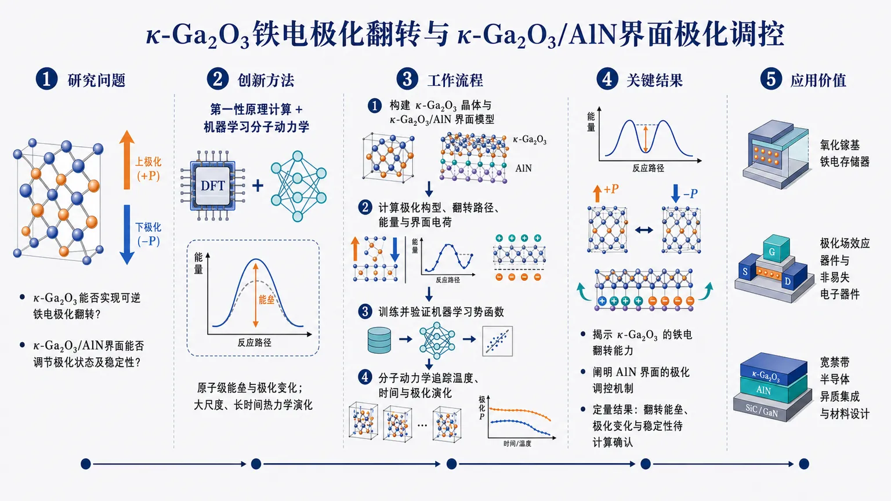
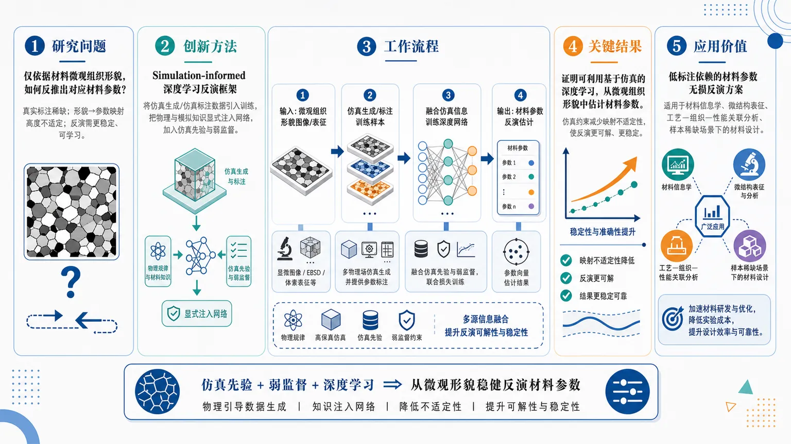
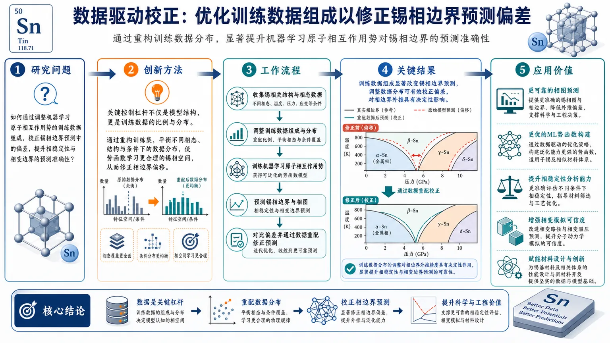

AI × Science 文献日报 2026/07/19
聚焦 AI × 物理 / 化学 / 材料交叉方向，自动过滤明显偏题的医学、教育与社会科学内容，并按主题重新排版，便于快速深读。
AI | 物理 | 化学 | 材料 | 交叉学科
核心关注（ML × ferro / 凝聚态）
3 篇κ-Ga2O3 的铁电翻转被放进第一性原理 + 机器学习分子动力学框架直接求解，说明宽禁带氧化镓可以按可翻转极化材料来设计，而不是只当作普通氧化物看待。κ-Ga2O3/AlN 异质结构里，极化调控由界面耦合与层间应变共同决定，重点已经从单相极化转到异质界面电场重分布。另一条线把模拟先验嵌入深度学习，从微结构形貌反演材料参数，处理的是显微组织到本构/热力学参数的逆问题。锡相边界那篇则明确给出训练数据配比会改写机器学习原子势的相界位置，说明相图、亚稳相和界面能对数据覆盖极其敏感。
-
01κ-Ga2O3与κ-Ga2O3/AlN异质结构的铁电翻转与极化调控Ferroelectric switching in κ-Ga 2 O 3 and polarization tuning in κ-Ga 2 O 3 /AlN heterostructures by first-principles and machine-learning molecular dynamics
📄 摘要：聚焦 κ-Ga2O3 的铁电翻转及 κ-Ga2O3/AlN 异质结构中的极化调控，结合第一性原理与机器学习分子动力学研究其极化行为与可调性，指向宽禁带氧化镓体系中的可工程化铁电/极化设计。
💡 亮点：该工作把第一性原理与机器学习分子动力学结合到 κ-Ga2O3/AlN 体系，聚焦铁电翻转和极化可调。它把宽禁带氧化镓的极化工程与异质结构设计连接起来。
📐 方法要点：DFT+MLMD 联用，解析 κ-Ga2O3 翻转势垒并跟踪 κ-Ga2O3/AlN 界面极化
🔗 相关工作关联：宽禁带氧化物铁电、异质结极化工程、第一性原理+机器学习势函数
💡 对你方向的启示：做铁电氧化物时要把界面应变和层间电荷一起训练进 ML 势，才能筛出可翻转极化结构
-
02基于模拟信息的深度学习微结构形貌材料参数估计Simulation-informed deep learning for estimating material parameters from microstructural morphology
📄 摘要：面向由微结构形貌反推材料参数的问题，提出模拟信息约束的深度学习框架，将模拟得到的先验与形貌特征结合，用于估计材料参数，核心是把显微形貌映射到参数空间的逆问题求解。
💡 亮点：它用模拟信息增强深度学习，从微结构形貌反推材料参数。该思路适合处理形貌—性能逆映射，降低实验表征依赖。
📐 方法要点：模拟先验约束的深度学习，从微结构形貌反演材料参数
🔗 相关工作关联：显微组织反演、物理约束深度学习、参数识别与逆问题
💡 对你方向的启示：可用于铁电畴图、磁畴纹理、相分离形貌到 Landau/弹性参数反演
-
03通过调整训练数据修正锡相边界的机器学习原子相互作用势研究Study on correcting tin phase boundaries by adjusting training data for machine learning atomic interaction potentials
📄 摘要：针对机器学习原子相互作用势对锡相边界预测偏差，论文通过调整训练数据来修正相界位置，说明训练集构成会直接影响相界、相稳定性等热力学预测。
💡 亮点：该工作指出，锡相边界误差可通过重整训练数据修正。它提醒机器学习原子势的相图精度高度依赖数据覆盖。
📐 方法要点：通过重配训练构型，校正锡 ML 原子势的相界与相稳定性
🔗 相关工作关联：机器学习原子势、NEP/MACE 类势、锡相图与多相边界
💡 对你方向的启示：训练集必须覆盖跨相与界面构型，否则相图、熔点和亚稳相都会偏
今日摘要
总览：今日三篇工作都围绕计算材料科学中的“数据—物理—预测”闭环：一篇用第一性原理与机器学习分子动力学研究 κ-Ga2O3/AlN 的铁电与极化调控，一篇用模拟信息增强深度学习从微结构形貌反推材料参数，一篇则通过调整训练数据修正锡的相边界。整体看，机器学习正从单纯拟合性质走向校准相图、解析界面并反演材料参数。
热点：热点之一是物理先验嵌入机器学习：第一性原理、机器学习分子动力学和模拟信息约束都在减少纯数据驱动的盲区。热点之二是从正问题转向逆问题，微结构形貌到材料参数的映射成为可训练任务。热点之三是数据集工程对相图与势函数精度的决定作用，锡相边界修正直接说明训练数据分布会改写模型预测。总体上，这组论文都强调“模型结构 + 数据质量 + 物理约束”共同决定材料模拟可靠性。
今日文献
3 篇 · 3 含图深析-
01
📊 含图深析
📄 摘要：聚焦 κ-Ga2O3 的铁电翻转及 κ-Ga2O3/AlN 异质结构中的极化调控，结合第一性原理与机器学习分子动力学研究其极化行为与可调性，指向宽禁带氧化镓体系中的可工程化铁电/极化设计。
💡 亮点：该工作把第一性原理与机器学习分子动力学结合到 κ-Ga2O3/AlN 体系，聚焦铁电翻转和极化可调。它把宽禁带氧化镓的极化工程与异质结构设计连接起来。
📖 展开分析 + 配图

研究问题κ-Ga2O3 是否存在可实现的铁电翻转路径？引入 AlN 构成异质结构后，界面耦合能否进一步调控其极化行为与可切换性？创新方法将第一性原理计算与机器学习分子动力学结合，在同一框架中同时追踪 κ-Ga2O3 的翻转路径与 κ-Ga2O3/AlN 界面的极化响应，实现从原子结构演化到极化调控的联合分析。工作流程先对 κ-Ga2O3 建立原子结构并用第一性原理搜索铁电翻转路径；再引入机器学习分子动力学模拟结构演化与有限温度下的翻转过程；随后构建 κ-Ga2O3/AlN 异质结构，分析界面耦合对极化方向与强度的影响；最终输出翻转机制与极化调控规律。关键结果确认 κ-Ga2O3 存在可研究的铁电翻转路径；证明 κ-Ga2O3/AlN 异质结构中的界面耦合可以有效调控极化；表明该体系不仅具备开关行为，还具备通过异质界面进行极化调谐的潜力。应用价值为氧化物/氮化物异质铁电器件提供设计思路，可用于构建可切换极化的存储、传感与低功耗电子器件，并为界面工程调控铁电性能提供理论依据。核心概览
该论文用第一性原理与机器学习分子动力学研究 κ-Ga₂O₃ 的铁电翻转及 κ-Ga₂O₃/AlN 异质结构中的极化调控，属于铁电氧化物与异质界面极化研究方向。
方法要点
- 采用第一性原理计算研究 κ-Ga₂O₃ 的铁电极化与翻转行为。
- 引入机器学习分子动力学，用于模拟或分析极化翻转相关动力学过程。
- 构建 κ-Ga₂O₃/AlN 异质结构，考察 AlN 叠层对界面或整体极化状态的影响。
- 关注铁电开关与异质界面极化调控之间的关联。
- 摘要未详述所用交换关联泛函、机器学习势类型、训练集构成、模拟温度或时间尺度等技术细节。
关键结果
- κ-Ga₂O₃ 被表明具有铁电极化翻转行为。
- κ-Ga₂O₃/AlN 异质结构中，极化状态可通过 AlN 叠层或异质界面进行调控。
- 研究结论指向 κ-Ga₂O₃ 在可开关铁电材料或极化工程中的潜在应用。
- 摘要未给出矫顽场、翻转势垒、极化强度、界面电荷密度或稳定性等具体数值。
- 摘要未详述不同结构构型、厚度、应变或界面端面的定量比较结果。
创新性判断
- 可能的新颖点之一在于将 κ-Ga₂O₃ 的铁电开关行为与 κ-Ga₂O₃/AlN 异质结构中的极化调控统一研究，而非仅考察单一材料极化性质。
- 结合第一性原理与机器学习分子动力学，可能使其能够处理比常规第一性原理分子动力学更复杂或更长尺度的极化翻转过程；但具体优势摘要未详述。
- 针对 κ-Ga₂O₃/AlN 异质界面的极化工程探索可能具有应用导向新意，尤其面向宽禁带氧化物/氮化物异质结构；但其相对已有工作的突破程度需全文或文献对比才能确认。
- 摘要未提供具体性能提升、定量预测或实验可验证指标，因此创新性目前只能判断为“方法组合与异质结构极化调控思路上具有潜在新意”。
-
02
📊 含图深析
📄 摘要：面向由微结构形貌反推材料参数的问题，提出模拟信息约束的深度学习框架，将模拟得到的先验与形貌特征结合，用于估计材料参数，核心是把显微形貌映射到参数空间的逆问题求解。
💡 亮点：它用模拟信息增强深度学习，从微结构形貌反推材料参数。该思路适合处理形貌—性能逆映射，降低实验表征依赖。
📖 展开分析 + 配图

研究问题如何仅依据材料微观组织形貌，反推出对应的材料参数；尤其是在真实标注稀缺、形貌到参数映射高度不适定的情况下，怎样让反演更稳定、可学习。创新方法提出 simulation-informed 深度学习反演框架：用仿真生成或仿真标注数据构建训练集，把物理/模拟知识显式注入网络训练，相当于给“形貌→参数”关系加上仿真先验与弱监督，缓解病态逆问题。工作流程输入微观组织形貌图像或表征；通过仿真生成/标注得到材料参数训练样本；将仿真信息融入深度网络训练；模型学习形貌与参数的对应关系；最终输出材料参数的反演估计。关键结果证明了可以利用基于仿真的深度学习，从微观组织形貌中估计材料参数；仿真约束能够减少映射不适定性，使反演问题更可解、更稳定。摘要未给出具体精度数值和提升幅度。应用价值为材料参数无损反演提供低标注依赖的智能方案，可用于材料信息学、微结构表征、工艺—组织—性能关联分析，以及样本稀缺场景下的材料表征与设计。核心概览
本文研究微结构形貌到材料参数的反问题，采用仿真生成或仿真约束的数据训练深度学习模型，实现由微结构图像/形态特征反演材料参数，属于材料反演与仿真增强机器学习方向。
方法要点
- 以微结构形貌图像或形态特征作为输入，估计材料参数。
- 使用模拟生成或受模拟约束的数据来训练深度学习模型。
- 将物理仿真信息并入数据驱动反演流程。
- 通过引入仿真先验，缓解仅靠实验形貌标注导致的参数不可辨识性。
- 网络结构、损失函数、参数范围等摘要未详述。
关键结果
- 该方法可用于从微结构形貌中估计材料参数。
- 将物理仿真信息融入深度学习反演，有助于降低参数不可辨识性。
- 其他定量性能、误差指标和实验设置摘要未详述。
创新性判断
- 可能的新颖点在于“simulation-informed”范式：不是单纯用实验数据训练，而是把仿真生成/约束信息作为先验融入反演。
- 这一思路针对微结构到参数映射中的一对多和不可辨识问题，具有方法论针对性。
- 但是否提出了新的网络结构、损失设计或更强的性能优势，摘要未详述，需谨慎判断。
-
03
📊 含图深析
📄 摘要：针对机器学习原子相互作用势对锡相边界预测偏差，论文通过调整训练数据来修正相界位置，说明训练集构成会直接影响相界、相稳定性等热力学预测。
💡 亮点：该工作指出，锡相边界误差可通过重整训练数据修正。它提醒机器学习原子势的相图精度高度依赖数据覆盖。
📖 展开分析 + 配图

研究问题如何通过调整机器学习原子相互作用势的训练数据组成，纠正锡相图中相边界预测偏差，提升对锡相稳定性与相变边界的准确描述。创新方法不只改模型结构，而是把“训练数据配比与分布”作为核心调控手段；通过重构训练集，让势函数学习到更合理的锡相空间，从而修正相边界偏移。工作流程收集锡相关结构与相态数据 → 调整训练数据的组成和分布 → 训练机器学习原子相互作用势 → 预测锡的相边界与相图 → 对比偏差并通过数据重配修正预测。关键结果训练集组成会显著改变势函数对锡相边界的预测；当训练数据分布被调整后，原本偏移的相图边界可以被纠正，说明数据分布对相边界外推具有决定性影响。应用价值为计算材料中相图预测提供可操作的校正思路，帮助更可靠地构建锡及类似材料的机器学习势函数，提升相稳定性分析、相变模拟和材料设计的可信度。核心概览
该论文研究锡多相相界预测，属于机器学习原子相互作用势与材料相稳定性计算方向。核心是通过调整训练数据组成，修正机器学习势对锡相边界的预测。
方法要点
- 以锡的多相体系为研究对象，关注不同晶相之间的相稳定性与相界。
- 使用机器学习原子相互作用势来描述锡原子间相互作用。
- 通过调整训练数据集来影响或校正机器学习势的预测结果。
- 训练数据调整涉及不同相、构型或热力学状态的取样；具体取样策略摘要未详述。
- 以机器学习势预测的相稳定性和相边界位置作为评估对象。
- 是否结合第一性原理、分子动力学或自由能计算，摘要未详述。
关键结果
- 训练集中不同相的取样会影响机器学习势给出的锡相稳定性。
- 训练集中不同构型或热力学状态的取样会改变预测的相界位置。
- 通过调整训练数据，可以修正锡多相相界的机器学习势预测。
- 摘要未给出具体相变温度、压力范围、误差数值或修正幅度。
- 摘要未说明修正后与实验或高精度理论结果的一致性程度。
创新性判断
- 可能的新颖点在于：不是单纯改进机器学习势模型结构，而是从训练数据组成入手，系统考察其对锡相边界预测的影响。
- 对多相锡体系而言，将训练集中相、构型和热力学状态的覆盖度与相边界准确性联系起来，可能具有方法学意义。
- 该工作可能强调机器学习势在相图或相界预测中对训练数据分布的敏感性，这对同类材料相稳定性研究有参考价值。
- 但摘要信息有限，无法判断其相对于已有主动学习、数据再加权或相图校正工作的具体创新幅度；这一点需全文确认。